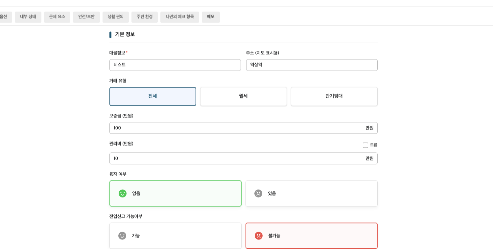

BangCheck
A rental-room inspection and comparison web app for saving properties, completing checklists, viewing rooms on a map, and comparing options.
Apr 2026 - Present

Project Overview
BangCheck is a full-stack web application that helps users make more informed rental decisions. The app allows users to register rooms, complete inspection checklists during visits, view saved properties on a map, and compare multiple rooms before choosing where to live.
The product brings together room details, personalized checklist answers, location data, reference points, and issue summaries so users can evaluate rental options with clearer context than a simple list of properties.
The project was developed for users in South Korea, so the live service currently supports Korean.
Key Features
- Room Management: Users can create, edit, delete, and view detailed rental-room records with soft-delete behavior for safer data handling.
- Inspection Checklists: Room-specific checklist answers help users record practical visit details such as mold, leaks, smells, bugs, condensation, and other issues.
- Map-Based Room Display: Saved rooms can be shown on a map with geocoded latitude and longitude data. `
- Reference Points: Users can save important locations such as stations, schools, or workplaces and compare their distance from saved rooms.
- Filtering & Sorting: Room lists can be filtered and sorted by rent type, deposit, monthly rent, and management fee.
- Authentication & Deployment: The application supports OAuth login with JWT access and refresh token flow, with deployment support using AWS EC2 and GitHub-based CI/CD.
My Role & Contributions
I worked as a backend developer, primarily owning the Room and Map API areas and integrating them with checklist data. My work focused on building the API foundation that allowed users to save rooms quickly, record inspection details, view properties geographically, and compare options with richer context.
- Implemented room CRUD APIs for room creation, detail lookup, editing, deletion, and soft-delete behavior.
- Integrated room creation and editing with checklist answers in a single transactional API flow.
- Built checklist answer save and read support for room inspections.
- Developed map room listing and geocoding flow so saved rooms could be displayed with location data.
- Implemented APIs for user-defined map reference points, including save, list, and delete behavior.
- Added distance and estimated walking-time calculation between saved rooms and reference points.
- Expanded room list responses with issue-summary data for frontend room cards.
- Added room list filtering and sorting by rent type, deposit, rent, and management fee.
- Managed related Flyway database migrations for room fields, checklist results, map data, and schema updates.
Backend Reliability
Beyond feature delivery, I improved backend reliability by aligning request and response DTOs with frontend needs, adding validation, handling nullable optional room fields, supporting geocoding fallback behavior, and converting room-related business errors into safer application exceptions.
Backend Scope
The API layer covered the main product workflows without exposing implementation details to the frontend. Instead of isolated endpoints, the backend was organized around complete user actions: registering rooms, saving checklist answers, viewing saved rooms on a map, comparing properties, and managing personalized checklist settings.
- Room APIs: Room creation, detail lookup, updates, deletion, list filtering, list sorting, and combined room/checklist registration flows.
- Checklist APIs: Checklist type selection, checklist item retrieval, custom checklist items, user checklist settings, and room-specific answer persistence.
- Map APIs: Map-ready room lists, geocoded coordinates, saved reference points, and reference point deletion.
- Report APIs: Room comparison support and user room summary data for comparison views.
- Auth APIs: OAuth login, guest access, JWT refresh, and logout support.
Development Workflow
During development, I also used AI-assisted workflows to improve productivity around project communication and implementation planning. I used AI as a support tool for understanding conventions, drafting issue and pull request language, and reducing repetitive documentation work so I could spend more time on backend feature development and integration.